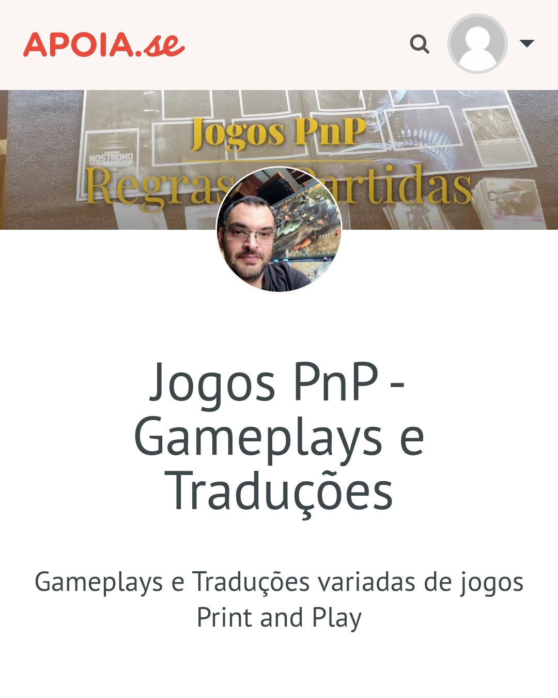

|
Mesa 030_maio_2026
SPIDER HUNT
Mesa 025_maio_2026
NINE CIRCLES (Alternativo)- Versão Caruso!
Mesa 05_mar_2026
PENCILS & POWERS v2.0 - Rise of the Shadow Coven
Mesa 05_mar_2026
PENCILS & POWERS - (O Cavaleiro Terrível)
--------------------------------------------------------
Mesa v93003
PENCILS & POWERS - (O Culto de Cthulhu)
Mesa v80030
MIDNIGHT AT CAMP BLOOD
SENHA REQUERIDA
Mesa v80030
MALLEUS 1666
Mesa v80030
LORD OF THE RINGS: THE ADVENTURE DECK GAME
Mesa v80030
JASPER AND ZOT [Redesenho]
Mesa v80021
DICEVANIA - QUINTET OF ROLLS
SENHA REQUERIDA
Mesa v80020
MISSION PATROL
Mesa v80020
NAVE TERRA NOVA - AUTOR: THREEMEGISTO
Mesa v80020
FIRETEAM ZERO
SENHA REQUERIDA
Mesa v80010
TORRE SOMBRIA
MESA v80000
MASTERS OF THE UNIVERSE
--------------------------------------------------------
MESA v60001
BORRACHA QUENTE
MESA v51000
ALIENS: A INFESTAÇÃO - (Versão Board Game) -- Autor: Caruso
MESA v51000
ZOMBIE IN MY POCKET
MESA v40010
BARBARIAN PRINCE
MESA v35000
QUEST FOR THE DEAD DRAGON’S RUBY
MESA v34010
ZOMBIE APOCALYPSE
MESA v34008
CHASED
MESA v34008
DICE OF THE LIVING DEAD
MESA v34002
ZOMBIE PLAGUE
Mesa v32000
DUNGEON OF DEADLIEST EVIL
v28/Abril/2025
MASMORRA - Domínios do Desespero -- AUTOR: CARUSO
Mesa v30000
HABITS
Mesa v28012
SPACE TREK - A 1-CARD MISSION
Mesa v27001
REST IN PEACE - THE ASYLUM
Mesa v26000
LANTERN
Mesa v23005
GET TO THE CHOPPER!
Mesa v23004
DECKS OF THE TERROR
Mesa v23002
DUNGEONS, DICE & DANGER
SENHA REQUERIDA
Mesa v23000
FIRE TOWER (DESPERTAR DE MORDOR)
Mesa v23000
THE ROYAL GAME OF GOOSE
Mesa v22000
SPACE ACE
Mesa v21000
AWAKEN THE ANCIENTS
Mesa v20025
GUARDS AND GOBLINS - + Redesenho TODOS CONTRA A DENGUE
Mesa v20025
JOURNEY BACK TO EARTH - (Doctor Who)- AUTOR: ??
Mesa v20021
NOSTROMO: THE LAST SURVIVOR- AUTOR: BOJAN
Mesa v20010
CIDADE DOS ZUMBIS (Zombicide Tiny) -- AUTOR: CARUSO
Mesa v20001
KART DUNGEON -- AUTOR: THREEMEGISTO
Mesa v14700
ASSALTO NO COLOSSUS -- AUTOR: THREEMEGISTO
Mesa v14700
DUNGEON OF DARKNESS - Versão Dragon Ball Z -- AUTOR: BRUNO MACHADO
Mesa v13206
BY TORCHLIGHT
Mesa v13010
DEMON ALIENS (Alternativo do DEMON RUN)
Mesa v13008
OBCY - ALIENS
Mesa v13006
THE MINI QUEST 1 - POKÉMON (Concurso 2024 - 1° Lugar)
Mesa v12000
MAZE OF THE RED MAGE
Mesa v11008
ZELDA: ECOS DE SABEDORIA
Mesa v10502
DUNGEON IN A TIN
Mesa v10501
HORDE OF THE DEAD
Mesa v9500
THE MINI QUEST 1
Mesa v3000
UNDER FALLING SKIES
Mesa v3000
TINY SCYTHE
Mesa v3000
ELDRITCH TINY
Mesa v3000
YOUR MONEY OR YOUR LIFE
--------------------------------------------------------
Mesa v1900
CREATURE
Mesa v1702
9-BIT DUNGEON [+Expansão não oficial]
Mesa v1500
KAIJU DICE
Mesa v1000
NINE CIRCLES
Mesa v950
ONE CARD DUNGEON [Redesenho]
Mesa v1000
THE D6 SHOOTERS [Redesenho]
Mesa v203
PESADELO NA MANSÃO

Apoie Rubens Caruso Jr.
Para quem quiser contribuir com o projeto e atualizações do código da mesa!
Atualizações e Mudanças na Mesa Virtual
30_maio_2026° Ajuste gerais no efeito de seleçao das cartas e agora CSS ajustado para circulos perfeitos!
05_mar_2026° Ajuste nas funções RESIZECARD e ZOOMGROUPSIZE... elas estavam tendo problemas em redimensionar cartas muito grandes
v93003° Mexendo na lógica do rolamento dos dados.
v90002° Resolvido popupzoom falhas gravacao! LOUSA e vários problemas do UNDO e REDO ajustados no index!
v90001° Lousa implementada + Ajustes gerais!
v90000° Novo sistema de desenho (LOUSA)! Novo design de alguns menus... teste radical!
v80021 - v80030° Ajustes no Index para a coluna da esquerda! 1° som colocado no jogo, exatamente o rolar os dados!
v80000 - v80020° Bugs Gerais corrigidos, Botão rastreio implementado!
v70000 - v70002° Bugs Gerais corrigidos, Melhora do sistema que rola os dados que agora falham menos na rolagem. Também introduzido função BLUR para aguardar o carregamento tanto das faces dos dados quanto das cartas!
v60000° Minijanela: Corrijido bug no celular que flipava imagens. O fundo quando renderizado as vezes,se sobrepunha as minicartas!
v51101 - 60002 ° Vários ajustes e correções!
v51100 ° MOVIMENTO das cartas agora mesmo aumentadas ou rotacionadas sem pulos!
v50020 ° No index aprimorei o script que gera um overlay CARREGANDO IMAGENS... até que todas as imagens sejam carregadas, caso haja algum problema de carregamento depois de 25 segundos este overlay some, o usuario é avisado mas pode continuar caso queira.
v50010 ° Na função handleAutoScroll() agora ha detecção se é mobile alterando o valor da cont edgeThreshold que define quando a mesa inicia o deslizar quando um item alcança as bordas da janela
v38000° Ajuste na função function openPopupZoom(card), agora ela cria popups moviveis para poder tambem usar em regras!
v37000 ° Ajuste na função de ZOOM, agora aplicado pelo centro da mesa!
v36000 ° Ajuste para que as NOTAS fiquem abaixo das cartas marcadas como sempre no topo.
35000-35800 ° Na página index, incluido lógica que detecta teclas no teclado e as utiliza para chamar algumas funções!
FUNCÕES ATUAIS:
[ setas ] = Movimento fino da Carta
[ delete ] = Manda carta para deck de Descarte!
[ , ] = Manda carta para deck de Descarte!
[ + ] = Aumenta o tamanho da carta
[ - ] = Diminui o tamanho da carta
[ CTRL - ] = Zoom - na Mesa
[ CTRL + ] = Zoom + na Mesa
[ 4 ] = Rotaciona para a esq.
[ 6 ] = Rotaciona para a dir.
[ E ] = Abre Popup com Carta para visualizar melhor.
[ T ] = Trava ou Destrava uma carta travada na base da mesa!
[ D ] = Duplica uma carta na mesa
[ 8 , V ] = Vira a carta, mostrando seu verso
[ G ] = Agrupa as Cartas em uma pilha para movimenta-las
34008 ° Pequeno ajuste na funcão mostrarConteudoCartas() que não funcionava (trazer carta para frente) se elas estivessem travadas!
v34007 ° Ajuste na função selectCardOnTable(card) para que libere trazendo para frente as cartas com data-locked="true" sejam trazidas para frente, mesmo quando clicadas no popup de mostrarConteudoCartas()
v34006 ° Ajuste na função selectCardOnTable(card) para que libere trazendo para frente as cartas com data-locked="true" e que estas sejam trazidas para frente, mesmo quando clicadas no popup de mostrarConteudoCartas()
v34005 ° Na função openpopupZoom(card), agora leva-se em consideração a rotação da carta ao mostrá-la na janela popup!
v34002 ° Verifica se o elemento esta travada com data-locked == true, neste caso ela não fica transparente ao mover a mesa clicando sobre ela! ajustado para isso: function onTouchMove(event) e function onMouseMove(event)
v34000 ° Ajustes gerais e agora com botão deslizante para alterar cor! Funciona bem mais com marcadores coloridos, tipo o vermelho! Este conseguimos alterar a cor para vários tipos.
v32000 ° Agora ajuste melhor no pulsar amarelo de destaque. Ao mover cartas elas se tornam transparentes!
v31000 ° Carta selecionada agora com efeito pulsante, ao parar o mouse agora o estado da carta é mostrado!
v30000 ° Ajustes mais adequados com relação ao uso das Border... agora ao trocar como tracejado vermelho, cinza ou nenhum, a posição da carta não é alterada quanto a posição X e Y
v29000 ° Vários ajustes com relação a BORDAS... alguns casos usando agora [boxShadows] para não alterar a posição das cartas! Funções DUPLICAR e TRAVAR CARTA agora mais estáveis... removendo bordas desnecessárias!
v28012 ° Agrupar e Criar Novo Deck agora conta com condicional que evita que os DADOS sejam incluidos! Ainda não consegui resolver este problema com eles, então preferi optar por não permitir caso estejam na pilha!
v28011 ° Agora quando um dado é colocado na mesa ele já é rolado!
v28010 ° Incluido nas NOTAS botão de TRAVAR/DESTRAVAR...
v28001 ° Função MOVEDECK() agora tem um temporizador que desliga apos um agrupamento caso o movimento nao ocorra dentro de um certo tempo (testando 3 segundos)Isso evita que ao apenas agrupar, caso não mova a pilha e selecionemos outra carta e a movemos ocorra o movimento tambem indesejado do deck anteriormente agrupado!
v28000 ° moveDeck() / StackCards() + groupandflipcards() + agruparetrazerparafrente() + zoomgroupsize ... ajustados! O stackcards()[AGRUPA E EMBARALHA]] agora chama
v27000 - 1 ° Todos os agrupamentos agora chamam a função MOVEDECK(), nela agora há um temporizador para caso não haja o movimento do deck agrupado em um certo tempo(testando 3 segundos) é desabilitado!
° Agora ao agrupar em qualquer função, as cartas já visualmente ficarão alinhadas em pilha! Antes só ocorria quando movimento se iniciava.
v26000 ° Novo sistema de SAVE e LOAD para arquivos criado e em teste!
v25000 ° Nova função mais robusta de UNDO implementada aqui e na outras mesas virtuais que já tinham ;)
° Implementação de ajuste do zindex nas cartas marcadas como no topo(Marcadores), sendo que agora podemos alterar esta posição ao clicar nelas!
° Janela de confirmação implementada nas notas antes de Apagar!
v23004 - 5 ° Agora na função Grid, caso nada seja digitado no numero de Colunas, serão usadas TODAS as cartas da pilha!
° Compensação geral aumentada de 800 para 1800! Botão Direito do mouse desabilitado dentro da area da mesa virtual!
° Correções gerais realizadas!
v23000 ° Correcōes no escolher face do dado e movimento das notas mais amplo agora.
° Correções gerais realizadas!
v21000 ° Agora o botões de SETUP ao serem clicados geram um Setup aleátorio!
° Correções gerais realizadas!
v2025 ° Finalmente arraste da mesa virtual funcional, parando ao se passar os limites da janela! Ajustei isso em todas as mesas anteriores!
° Correções gerais realizadas!
v20024 ° Ajustes necessários para uso de imagens de fundo!
° Correções gerais realizadas!
v20020 ° Ajuste nas funções de movimento, agora diminuido ainda mais o pulinho pois levando em consideraçao a scale aplicada a carta!
° Correções gerais realizadas!
v20011 ° Popup de zoom para as carta aprimorado e agora inclui botão virar, cambiando entre cardX.jpeg e cardXback.jpeg
° Correções gerais realizadas!
v20001 ° Cartas fixadas na mesa não podem virar marcadores no topo sem expressa confirmação, e vice versa!
° Correções gerais realizadas!
v14700 ° Função de Agrupamento de cartas com opçoes implementada!
° Correções gerais realizadas!
v14002 ° Novo deck de Descarte implementado! Ajustes profundos nos popups, direto no codigo agora!
v13206 ° REMOVIDO Zoom da imagem ao segurar o clique ou toque... estava dando muitos problemas então temporariamente desativado. Seu uso agora é através de botão no Popup.
° Ajustes gerais.
v13008 ° Sistema UNDO mais refinado e agora quando clicado NOVO JOGO ou SETUP valores registrados são zerados!
v13103 ° Função EMBARALHAR DECK NA MESA + (OPÇÔES) refinada! Agora inclui outras opções: VIRAR(Costas) e ROTACIONAR.
° Ajustes gerais.
v13010 ° Indicador visual de 2 segundos (BORDA AZUL) nos itens colocados na mesa!
° Ajustes gerais.
v13008 ° Sistema UNDO mais refinado e agora quando clicado NOVO JOGO ou SETUP valores registrados são zerados!
° Ajustes gerais.
v13006 ° Implementado sistema beta para realizar UNDO de ações da mesa!
° Ajustes gerais.
v13000 ° PARECE que finalmente resolvi o problema que ao restaurar um save os dados rolavam descontroladamente!
° Ajustes gerais.
v12000 ° Nova implementação de SETUP... onde ao clicar no botão, um SETUP pré-configurado é colocado na mesa!
° Ajustes gerais.
v11008 ° Nova Função: EMBARALHAR DECK (AGRUPAMENTO), embaralha todas as cartas do deck que estejam na mesa... trocando entre si os lugares aleatóriamente!
° Nova Função: TRAVAR/DESTRAVAR DECK (AGRUPAMENTO), trava e destrava todas as cartas do deck presentes na mesa!
° Ajustes gerais.
v10502 ° Ajustes gerais.
v10501 ° Implementado botão no popup que rola todos os dados presentes do mesmo deck!
v10000 ° Dados e marcadores agora são colocados na mesa em número ilimitado sem necessidade de cópia!
° DinDin colocado como marcador e com cálculo mostrado no topo da página!
v9500 ° Ajustes mais aprofundados nas funções!
° Dados e marcadores agora são colocados na mesa em número ilimitado sem necessidade de cópia!
v9000 ° Ajustes mais aprofundados nas funções.
v8200 ° Notas agora centradas na janela ao serem colocadas na mesa.
° Funções gerais de agrupamento revisadas e agora as Agrupar+Virar, Agrupar+Embaralhar, Agrupar+Dimensionar ao final estão finalmente conseguindo mover o deck das cartas agrupadas!
v8100 ° Ajuste importantes na função TRAVAR/DESTRAVAR! Mais ajustes gerais. Desta vez testando uma reorganização mantendo a ordem z-index entre as cartas travadas ao restaurar, e depois as não travadas colocadas acima na ordem hierquica z-index. Parece melhor assim na restauração do load esta reorganização.
v8000 - ° Notas mais ajustadas.
° Problema do movimento das cartas com o zoom menor da mesa aplicado compensando na função MOVEDECK.
° Função de Agrupamento+Virar Cartas parece que finalmente corrigido!
° Alguns ajustes com relação aos dados.
° Problema detectado com o load de cartas travadas! Provavelmente corrigido...
v5200 ° Ainda apanhando para fazer as notas funcionarem no celular (Sem sucesso no deletar)... Mas pelo menos agora temos um marcador SPINNER para vidas ou outros acompanhamentos de pontos até 8! Função travar nele não impede rotação como as demais cartas travadas.
v5100 ° Ajuste importantes na função TRAVAR/DESTRAVAR! Mais ajustes gerais.
v5000 ° FINALMENTE! Os Dados agora podem ser colocados como são os itens dos Decks1 E o melhor... serão salvos tambem!
v4200 ° Notas agora podem sem apagadas!
° Marcadores são colocados na mesa mantidos na frente dos demais componentes! Lógico né, até alterarmos isso!
v4100 ° Auto Save, Save LocalStorage e opcionalmente eterno(beta) + Apagar Nota!
v3000 ° Auto Save e Save LocalStorage concluídos, mais algumas correções feitas!
v2000 ° Auto Save e Save LocalStorage em teste!
v1999 ° Auto Save e Save LocalStorage em teste!
v1900 ° Possibilidade de colocar Notas flutuantes editáveis!
v1702 ° Dados com sombra e alguma tentativa leve de mostrar que página deve ficar ativa.
v1600 ° Botão rolar do dado agora se oculta ao clicar fora dele, pequena animação ao rolar o dado!
v1500 ° Agora opção de recolher de volta para o deck somente a carta selecionada (Opção na janela Popup)!
v1400 ° Função de arraste da mesa agora sobre cartas travadas!
v1100 ° AJustes Gerais, visuais e testando agora embaralhamento dos decks já no carregamento!
v1000 ° Ajustes Gerais e agora incluido Popup concentrando opções e função de escolha da face do dado!
v900 ° Ajustes Gerais
v500 ° Ajuste Gerais e vários Bugs arrumados. Mas Falta muito ainda!!!
v200 ° Ajuste Gerais e testando algumas funções novas!
° Bugs localizados, uma bela infestação! kkkkkkk
v1 ° Início do projeto Mesas Virtuais!
° A idéia é conseguir um funcionamento básico para poder jogar alguns joguinhos Print and Play já que no momento sem possibilidade de imprimí-los! Vou também deixar o projeto aberto para os colegas que quiserem usá-lo ou assim como eu, precisarem! ;)
Caso tenham algum problema ou dúvida, podem conversar comigo direto via: rubenscaruso@gmail.com
|